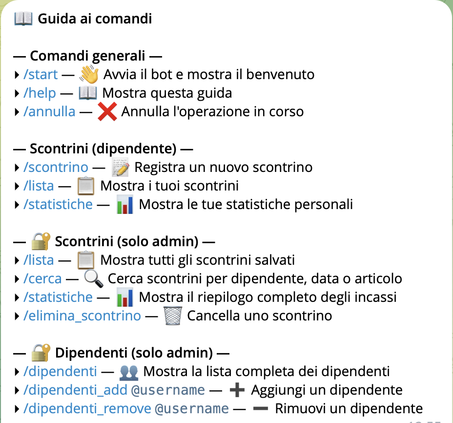
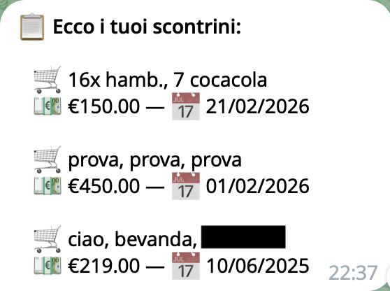
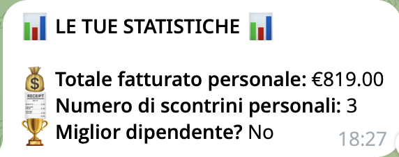
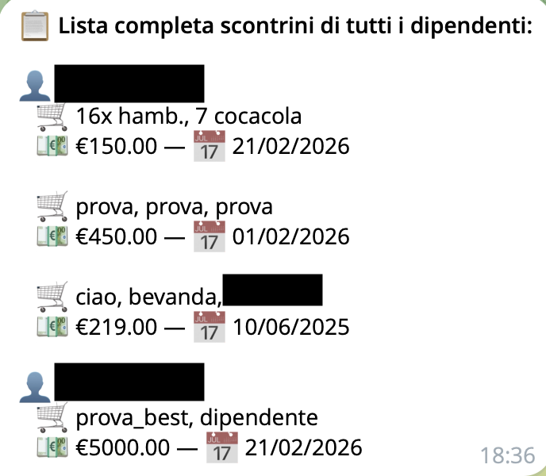
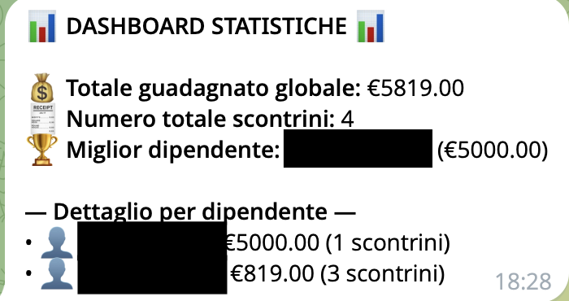

Il Progetto
PayDex nasce principalmente come esercizio di programmazione e come opportunità per sviluppare e migliorare le proprie competenze tecniche. Alcune funzionalità sono state inoltre realizzate su richiesta di utenti all'interno di contesti di roleplay.
🎤 Introduzione
Il sistema è basato su due ruoli (Admin e Dipendenti), differenziando in base all'utente quali comandi e quali dati sono visibili.
👥 Ruoli nel Sistema
👑 Admin
Il livello più alto. I loro ID Telegram sono scritti esplicitamente nel file di configurazione iniziale.
- Godono di permessi completi di visione di tutti i dati aziendali.
- Possono modificare la lista dipendenti.
- Possono aggiungere nuovi admin tramite il comando
/add_admin [id_utente](richiede almeno un amministratore iniziale nel file di configurazione).
💼 Dipendenti
Aggiunti dagli admin tramite username (@username).
- Possono consultare e registrare unicamente i propri scontrini o quelli concordati.
- All'inserimento dei dati, un sistema controlla se l'utente che usa il bot si trova nella lista dipendenti o in quella admin.
🚀 Le Funzionalità nel Dettaglio
1. Comandi Generali
/start: Invia un messaggio di benvenuto all'utente con una breve descrizione delle funzionalità del bot./help: Mostra la guida di tutti i comandi disponibili e chiari, divisi per ruolo (Generali, Dipendenti, Admin)./annulla: Ferma bruscamente una conversazione interattiva ("ConversationHandler"), utile nel caso l'utente volesse abbandonare un form d'inserimento.

TODO: Inserire l'immagine in images/help_message.png2. Comandi per i Dipendenti
🧾 /scontrino
Avvia un form multi-fase per la creazione di una nuova ricevuta:
- Verifica dei permessi (solo dipendenti o admin).
- Scelta del nome del dipendente (da tastiera a schermo).
- Inserimento elenco articoli separati da virgola.
- Inserimento prezzo totale (sostituisce in automatico la virgola col punto).
- Inserimento data ("oggi" o in formato gg/mm/aaaa).
- Genera l'oggetto JSON, lo salva sul Database e stampa un riepilogo.
📋 /lista
Consulta il database e stampa esclusivamente i propri scontrini (carrello, prezzo e data).

TODO: Immagine scontrini_utente.png📊 /statistiche
Stampa il fatturato personale, la quantità totale di scontrini registrati e indica se si è il dipendente col maggior numero di incassi aziendali.

TODO: Immagine stats_dip.png3. Comandi Gestionali per Admin
Tutti i comandi seguenti passano un Check Admin iniziale invisibile prima di procedere, bloccando l'esecuzione in caso negativo.
Gestione Utenti
/dipendenti_add [@username]: Inserisce e memorizza nel JSON in Firestore un nuovo dipendente. Impedisce duplicazioni./dipendenti_remove [@username]: Rimuove il dipendente dal database per revocargli gli accessi./dipendenti: Stampa a visuale di lista tutti gli attuali dipendenti abilitati./add_admin [id_utente]: Inserisce un nuovo amministratore.
Amministrazione Scontrini
/lista(Potenziato): L'admin vede la lista raggruppata per persona di tutti gli scontrini aziendali.
TODO: Immagine scontrini_adm.png/elimina_scontrino: Avvia il flow di cancellazione di uno scontrino inviato erroneamente (scelta utente → lista numerata → invio indice da eliminare)./cerca [testo]: Tool di controllo combinato globale. Cerca scontrini per articoli, venditore o data (es./cerca @mario 01/2026)./statistiche(Dashboard Admin): Mostra incasso totale globale, miglior dipendente assoluto e dettaglio per dipendente in ordine decrescente.
TODO: Immagine stats_adm.png